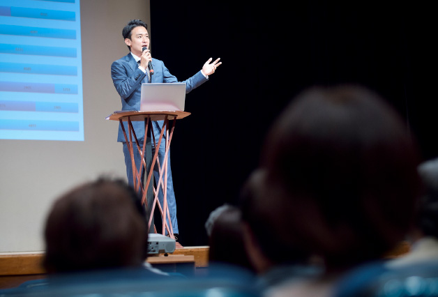

普及活動
普及活動
講演会について

全国の中小企業経営者等に向けて、脱炭素経営を広めるセミナーを実施しています。
カーボンニュートラルに向けた脱炭素への取り組みは、これからの企業経営に欠かせないものとなりつつあります。中小企業の経営者の目線で脱炭素経営の必要性や具体的な取り組み、経営に与えるプラスの効果などを、わかりやすく具体例に基づいてお伝えする講演会を実施しています。

講演会実績一覧

中小企業向けGXシンポジウムPart１
2023年7月／岐阜商工会議2F 大ホール
〇基調講演
『カーボンニュートラル実現に向けた最新動向と中小企業の脱炭素経営について』
環境省中部地方環境事務所 曽山信雄
〇講演
『脱炭素経営に人材育成について』
JCNA副理事 鎌田長明
〇パネルディスカッション
『地域ぐるみでの脱炭素社会経営支援について』
＜パネリスト＞
・環境省 地球環境局 地球温暖化対策課 脱炭素ビジネス推進室 栁川輝
・岐阜市 環境部 脱炭素社会推進課 課長 梅村朋宏
・岐阜商工会議所 事務局長 船田淳
・JCNA副理事 鎌田長明
・岐阜みらいポータル協会 理事 担当室長 西岡徹人
＜モデレーター＞
・三承工業(株) ダイバーシティ推進室 神田純代
主催：一般社団法人岐阜みらいポータル協会

Aiming for carbon neutral
2023年6月／RaiBoC Hall（市民会館おおみや）7階小ホール
埼玉中央青年会議所 6月第1例会
『取引先、従業員から選ばれる企業になろう』
・講師1：鎌田 長明（一般社団法人 日本カーボンニュートラル協会 監事）
・講師2：西岡 徹人（一般社団法人 日本カーボンニュートラル協会 理事）
【内容】
参加者がカーボンニュートラルについて学び、取り組む意識を醸成することが目的です。
対象者：地域（さいたま市、上尾市、伊奈町）の企業経営者及び従業員
主催：公益社団法人 埼玉中央青年会議所
後援：さいたま市、上尾市、伊奈町

日本青年会議所 地球環境委員会 カーボンニュートラル・アドバイザー セミナー
2023年6月／スターツおおたかの森ホール1階リハーサル室
CANのアドバンストのプレセミナーの開催
日本青年会議所 地球環境委員会 19名
＜JCNA理事＞
鎌田長明、石田英誉
＜委員会メンバー＞
青木孝太、北口崇
運営会社
株式会社情報基盤開発（西藤、李）
脱炭素経営宣言について

公益社団法人日本青年会議所と連携し「脱炭素経営宣言」を推進しています。
全国各地の中小企業に対し、これから脱炭素経営を実践していくための決意表明である「脱炭素経営宣言」を推進しています。社内周知、省エネ、排出量算定、アクションプランの策定の４項目を軸として、脱炭素経営を進める企業を増やしていきます。